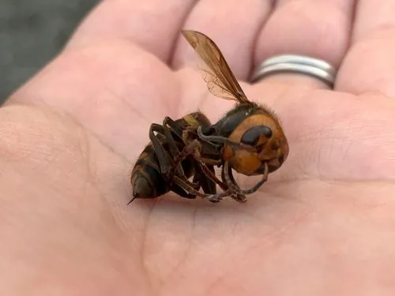

昆虫 · 动物界
金环胡蜂 Vespa mandarinia

世界上体型最大的胡蜂，蜂王体长可达 4.5 cm，毒针凶猛，常群体攻击其他蜂巢和蜂群，在北美被列为入侵物种。
- 分类
- 门节肢动物门纲昆虫纲目膜翅目科胡蜂科属胡蜂属
- 栖息环境
- 山地森林、果园与农田，巢筑于地下、树洞或建筑缝隙
- 地理分布
- 东亚地区，包括中国、日本、朝鲜半岛和俄罗斯远东
- 保护级别
- 暂无评估；在北美被列为入侵物种
物种志
金环胡蜂蜂王体长 4–4.5 cm，工蜂 2.5–4 cm，是已知体型最大的胡蜂。头部橙黄色，胸部黑褐色，腹部有黄黑相间的环带，大颚发达，尾端有粗壮的毒针。飞行时声音低沉，辨识度高。
金环胡蜂一年一代，受精蜂王越冬后春季独自筑巢产卵，工蜂数量增加后转入捕食昆虫、取食树液和蜜露。它们善于攻击蜜蜂巢，用大颚咬死守卫蜂并掠夺蜂蛹和蜂蜜，几十只金环胡蜂可在数小时内摧毁一个数万只蜜蜂的蜂巢。毒液含组胺、蜂毒肽等成分，蜇刺剧痛，多次蜇刺可致肾衰竭甚至死亡，过敏者尤其危险。它原产东亚，中国、日本、朝鲜半岛等地常见，2020 年前后传入北美，在当地被列为入侵物种；防治需夜间追踪蜂巢后清除，并做好个人防护。
形态与习性
- 食性成虫捕食昆虫、取食树液和蜜露，幼虫由成虫喂食
- 体长蜂王约 4–4.5 cm，工蜂约 2.5–4 cm
- 社会结构一年一代，受精蜂王越冬后春季建巢
- 攻击性常群攻蜜蜂巢，掠夺蜂蛹和蜂蜜
- 毒性毒液可致过敏休克和多器官损伤
- 分布东亚原产，2020 年前后传入北美
趣味知识
- 金环胡蜂是已知体型最大的胡蜂，蜂王体长可达 4.5 cm。
- 它们能用大颚咬断蜜蜂的头，再夺取蜂蛹喂养幼虫。
- 几十只金环胡蜂可在几小时内摧毁一个数万只蜜蜂的蜂巢。
- 被蜇后出现呼吸困难等症状应立即就医，过敏者尤其危险。